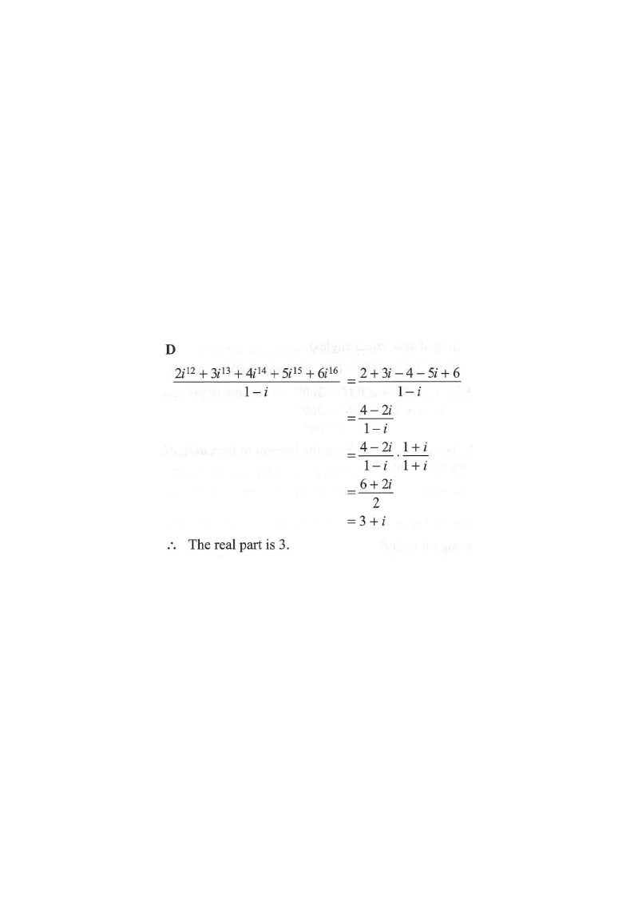

Powers of i (cycle)Numerator sumRationalisingResult in C
Step 1 — Reduce each power of $i$ by its cycle value.
HKDSE Math 2018 · Paper 2 · Q37
The real part of $\dfrac{2i^{12}+3i^{13}+4i^{14}+5i^{15}+6i^{16}}{1-i}$ is
A. $-3$
B. $-1$
C. $1$
D. $3$

Figure (original exam diagram)
Step 1 · Simplify the powers of $i$
Cycle of Powers of i\(i^{4k}=1,\quad i^{4k+1}=i,\quad i^{4k+2}=-1,\quad i^{4k+3}=-i\)The exponents \\(12\\) to \\(16\\) reduce to \\(1,i,-1,-i,1\\) because the pattern repeats every four steps.
Using the cycle $i^1=i,\;i^2=-1,\;i^3=-i,\;i^4=1$ (and the pattern repeats every 4):
Sum the real parts and the imaginary parts separately:
$\dfrac{(2-4+6)+(3-5)i}{1-i}=\dfrac{4-2i}{1-i}$
Hint: Collect like terms: real numbers together, multiples of $i$ together.
Step 3 · Rationalise the denominator
Rationalising the Denominator\(\dfrac{a+bi}{c+di}\times\dfrac{c-di}{c-di}\)Multiplying numerator and denominator of \\(\\dfrac{4-2i}{1-i}\\) by the conjugate \\(1+i\\) makes the denominator real.
Multiply numerator and denominator by the conjugate $1+i$:
$\dfrac{4-2i}{1-i}\times\dfrac{1+i}{1+i}$
Hint: The conjugate of $1-i$ is $1+i$. This makes the denominator real.
Step 4 · Expand
Difference of Two Squares with i²=-1\((1-i)(1+i)=1-i^{2}=2\)The conjugate pair multiplies to the real number \\(2\\), and the numerator becomes \\(6+2i\\).